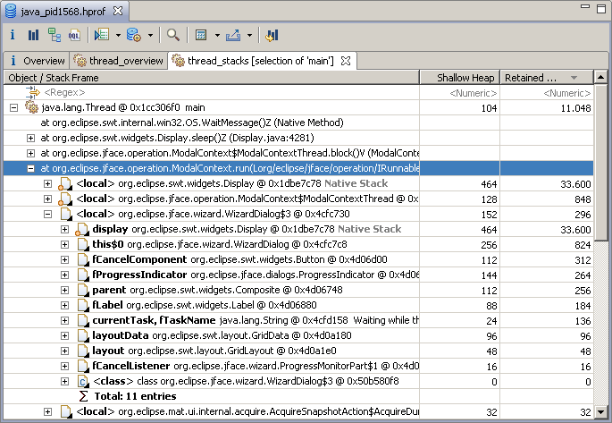

Memory Analyzer provides several queries to inspect the threads at the moment the snapshot was taken.
Threads Overview
To get an overview of all the threads in the heap dump use the query:

The query provide some properties like Name, Object, Context Classloader, etc... for each of the threads.
Threads Details
You can proceed with the analysis of a single thread by using context menu. Memory Analyzer provides an extension point, such that extensions can provide semantic information about the threads activity. The result of the Thread Details query will contain such information (if available), some overview information, and possibly the stacktrace of the thread.
Threads Stacks
Some heap dump formats (e.g. HPROF dumps from recent Java 6 VMs and IBM system dumps) contain information about the call stacks of threads, and the Java local objects per stack frame. To access this information for all threads use the query with no objects as parameter. To view the call stacks of particular selection of threads use the same query from the context menu.
Exploring the call-stacks and the local Java objects is a powerful feature, giving a debugger like capabilities over a snapshot. It allows analyzing in details the reason for a memory intensive operations. And it also enables that heap dumps and Memory Analyzer are used not only for memory-related problems, but also for a wide range of other problems e.g. unresponsive applications.